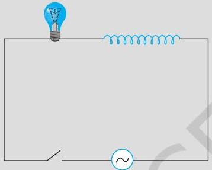
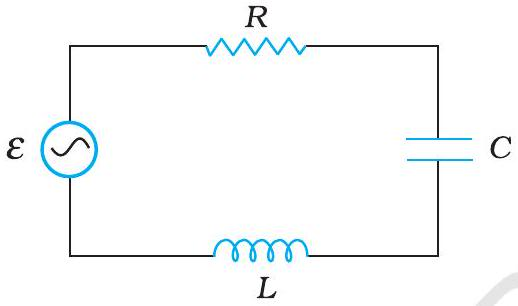

एक विद्युत बल्ब 220 V आपूर्ति पर 100 W शक्ति देने के लिए बनाया गया है। (a) बल्ब का प्रतिरोध ; (b) स्रोत की शिखर वोल्टता एवं (c) बल्ब में प्रवाहित होने वाली rms धारा ज्ञात कीजिए।
बल्ब का प्रतिरोध ज्ञात कीजिए।
स्रोत की शिखर वोल्टता ज्ञात कीजिए।
बल्ब में प्रवाहित होने वाली rms धारा ज्ञात कीजिए।
25.0 mH का एक शुद्ध प्रेरक 220 V के एक स्रोत से जुड़ा है। यदि स्रोत की आवृत्ति 50 Hz हो तो परिपथ का प्रेरकीय प्रतिघात एवं rms धारा ज्ञात कीजिए।
एक लैंप किसी संधारित्र के साथ श्रेणीक्रम में जुड़ा है। dc एवं ac संयोजनों के लिए अपने प्रेक्षणों की प्रागुक्ति कीजिए। प्रत्येक प्रकरण में बताइए कि संधारित्र की धारिता कम करने का क्या प्रभाव होगा?
15.0 μ F का एक संधारित्र, 220 V, 50 Hz स्रोत से जोड़ा गया है। परिपथ का संधारित्रीय प्रतिघात और इसमें प्रवाहित होने वाली ( rms एवं शिखर) धारा का मान बताइए। यदि आवृत्ति को दोगुना कर दिया जाए तो संधारित्रीय प्रतिघात और धारा के मान पर क्या प्रभाव होगा?
एक प्रकाश बल्ब और एक सरल कुंडली प्रेरक, एक कुंजी सहित, चित्र में दर्शाए अनुसार, एक ac स्रोत से जोड़े गए हैं। स्विच को बंद कर दिया गया है और कुछ समय पश्चात एक लोहे की छड़ प्रेरक कुंडली के अंदर प्रविष्ट कराई जाती है। छड़ को प्रविष्ट कराते समय प्रकाश बल्ब की चमक (a) बढ़ती है (b) घटती है (c) अपरिवर्तित रहती है। कारण सहित उत्तर दीजिए।

एक 200 Ω प्रतिरोधक एवं एक 15.0 μ F संधारित्र, किसी 220 V, 50 Hz ac स्रोत से श्रेणीक्रम में जुड़े हैं। (a) परिपथ में धारा की गणना कीजिए; (b) प्रतिरोधक एवं संधारित्र के सिरों के बीच (rms) वोल्टता की गणना कीजिए। क्या इन वोल्टताओं का बीजगणितीय योग स्रोत वोल्टता से अधिक है? यदि हाँ, तो इस विरोधाभास का निराकरण कीजिए।
परिपथ में धारा की गणना कीजिए।
प्रतिरोधक एवं संधारित्र के सिरों के बीच (rms) वोल्टता की गणना कीजिए। क्या इन वोल्टताओं का बीजगणितीय योग स्रोत वोल्टता से अधिक है? यदि हाँ, तो इस विरोधाभास का निराकरण कीजिए।
(a) विद्युत शक्ति के परिवहन के लिए प्रयुक्त होने वाले परिपथों में निम्न शक्ति गुणांक, संप्रेषण में अधिक ऊर्जा का क्षय होगा, निर्दिष्ट करता है। इसका कारण समझाइए। (b) परिपथ का शक्ति गुणांक, प्रायः परिपथ में उपयुक्त मान के संधारित्र का उपयोग करके सुधारा जा सकता है। यह तथ्य समझाइए।
विद्युत शक्ति के परिवहन के लिए प्रयुक्त होने वाले परिपथों में निम्न शक्ति गुणांक, संप्रेषण में अधिक ऊर्जा का क्षय होगा, निर्दिष्ट करता है। इसका कारण समझाइए।
परिपथ का शक्ति गुणांक, प्रायः परिपथ में उपयुक्त मान के संधारित्र का उपयोग करके सुधारा जा सकता है। यह तथ्य समझाइए।
283 V शिखर वोल्टता एवं 50 Hz आवृत्ति की एक ज्यावक्रीय वोल्टता एक श्रेणीबद्ध L C R परिपथ से जुड़ी है जिसमें R = 3 Ω, L = 25.48 mH, एवं C = 796 μ F है। ज्ञात कीजिए (a) परिपथ की प्रतिबाधा; (b) स्रोत के सिरों के बीच लगी वोल्टता एवं परिपथ में प्रवाहित होने वाली धारा के बीच कला-अंतर; (c) परिपथ में होने वाला शक्ति-क्षय; एवं (d) शक्ति गुणांक।
परिपथ की प्रतिबाधा ज्ञात कीजिए।
स्रोत के सिरों के बीच लगी वोल्टता एवं परिपथ में प्रवाहित होने वाली धारा के बीच कला-अंतर ज्ञात कीजिए।
परिपथ में होने वाला शक्ति-क्षय ज्ञात कीजिए।
शक्ति गुणांक ज्ञात कीजिए।
माना कि पूर्व उदाहरण में वर्णित स्रोत की आवृत्ति परिवर्तनशील है। (a) स्रोत की किस आवृत्ति पर अनुनाद होगा। (b) अनुनाद की अवस्था में प्रतिबाधा, धारा एवं क्षयित शक्ति की गणना कीजिए।
स्रोत की किस आवृत्ति पर अनुनाद होगा।
अनुनाद की अवस्था में प्रतिबाधा, धारा एवं क्षयित शक्ति की गणना कीजिए।
किसी हवाई अड्डे पर सुरक्षा कारणों से, किसी व्यक्ति को धातु-संसूचक के द्वार पथ से गुजारा जाता है। यदि उसके पास कोई धातु से बनी वस्तु है, तो धातु संसूचक से एक ध्वनि निकलने लगती है। यह संसूचक किस सिद्धांत पर कार्य करता है?
एक 100 Ω का प्रतिरोधक 200 V, 50 Hz आपूर्ति से संयोजित है। (a) परिपथ में धारा का rms मान कितना है? (b) एक पूरे चक्र में कितनी नेट शक्ति व्यय होती है।
परिपथ में धारा का rms मान कितना है?
एक पूरे चक्र में कितनी नेट शक्ति व्यय होती है।
(a) ac आपूर्ति का शिखर मान 300 V है। rms वोल्टता कितनी है? (b) ac परिपथ में धारा का rms मान 10 A है। शिखर धारा कितनी है?
ac आपूर्ति का शिखर मान 300 V है। rms वोल्टता कितनी है?
ac परिपथ में धारा का rms मान 10 A है। शिखर धारा कितनी है?
एक 44 mH का प्रेरित्र 220 V, 50 Hz आपूर्ति से जोड़ा गया है। परिपथ में धारा के rms मान को ज्ञात कीजिए।
एक 60 μ F का संधारित्र 110 V, 60 Hz ac आपूर्ति से जोड़ा गया है। परिपथ में धारा के rms मान को ज्ञात कीजिए।
अभ्यास 7.3 व 7.4 में एक पूरे चक्र की अवधि में प्रत्येक परिपथ में कितनी नेट शक्ति अवशोषित होती है? अपने उत्तर का विवरण दीजिए।
30 μ F का एक आवेशित संधारित्र 27 mH के प्रेरित्र से जोड़ा गया है। परिपथ के मुक्त दोलनों की कोणीय आवृत्ति कितनी है?
एक श्रेणीबद्ध L C R परिपथ को, जिसमें R = 20 Ω, L = 1.5 H तथा C = 35 μ F, एक परिवर्ती आवृत्ति की 200 V ac आपूर्ति से जोड़ा गया है। जब आपूर्ति की आवृत्ति परिपथ की मूल आवृत्ति के बराबर होती है तो एक पूरे चक्र में परिपथ को स्थानांतरित की गई माध्य शक्ति कितनी होगी?
चित्र 7.17 में एक श्रेणीबद्ध L C R परिपथ दिखलाया गया है जिसे परिवर्ती आवृत्ति के 230 V के स्रोत से जोड़ा गया है। L = 5.0 H, C = 80 μ F, R = 40 Ω (a) स्रोत की आवृत्ति निकालिए जो परिपथ में अनुनाद उत्पन्न करे। (b) परिपथ की प्रतिबाधा तथा अनुनादी आवृत्ति पर धारा का आयाम निकालिए। (c) परिपथ के तीनों अवयवों के सिरों पर विभवपात के rms मानों को निकालिए। दिखलाइए कि अनुनादी आवृत्ति पर L C संयोग के सिरों पर विभवपात शून्य है।

स्रोत की आवृत्ति निकालिए जो परिपथ में अनुनाद उत्पन्न करे।
परिपथ की प्रतिबाधा तथा अनुनादी आवृत्ति पर धारा का आयाम निकालिए।
परिपथ के तीनों अवयवों के सिरों पर विभवपात के rms मानों को निकालिए। दिखलाइए कि अनुनादी आवृत्ति पर L C संयोग के सिरों पर विभवपात शून्य है।